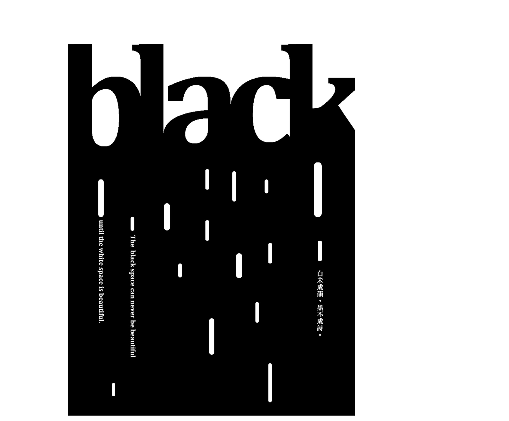
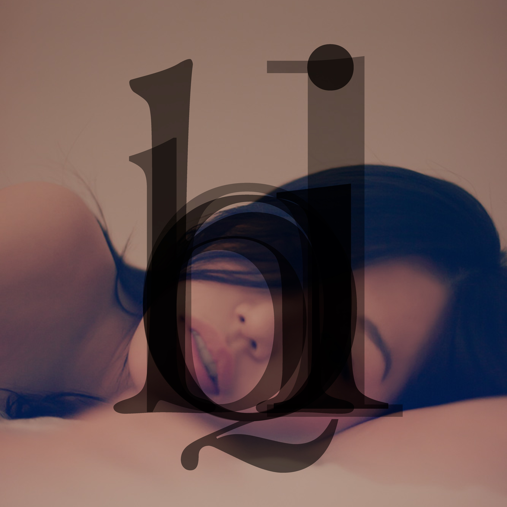
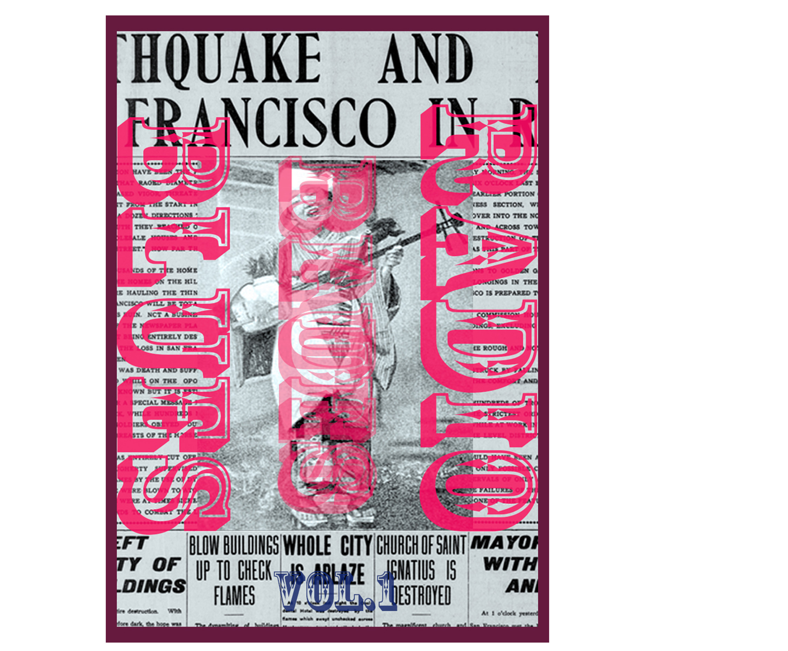
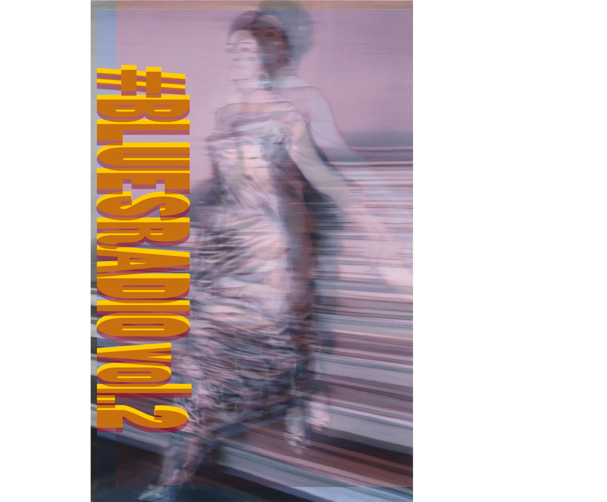
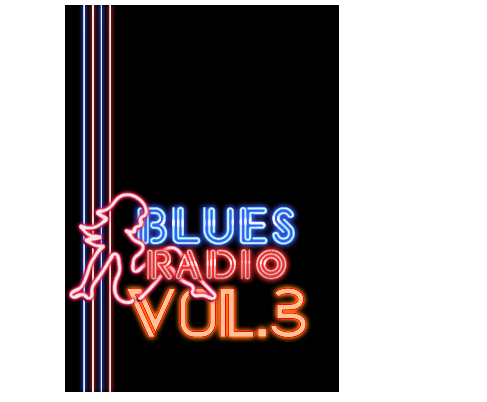
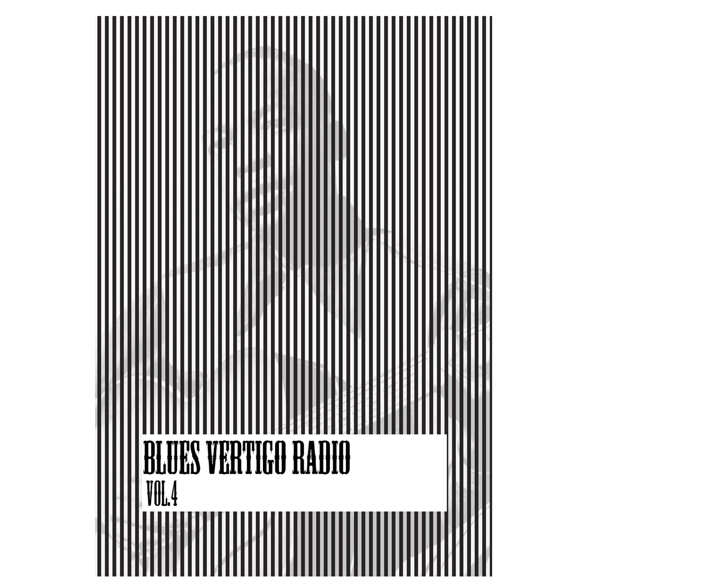
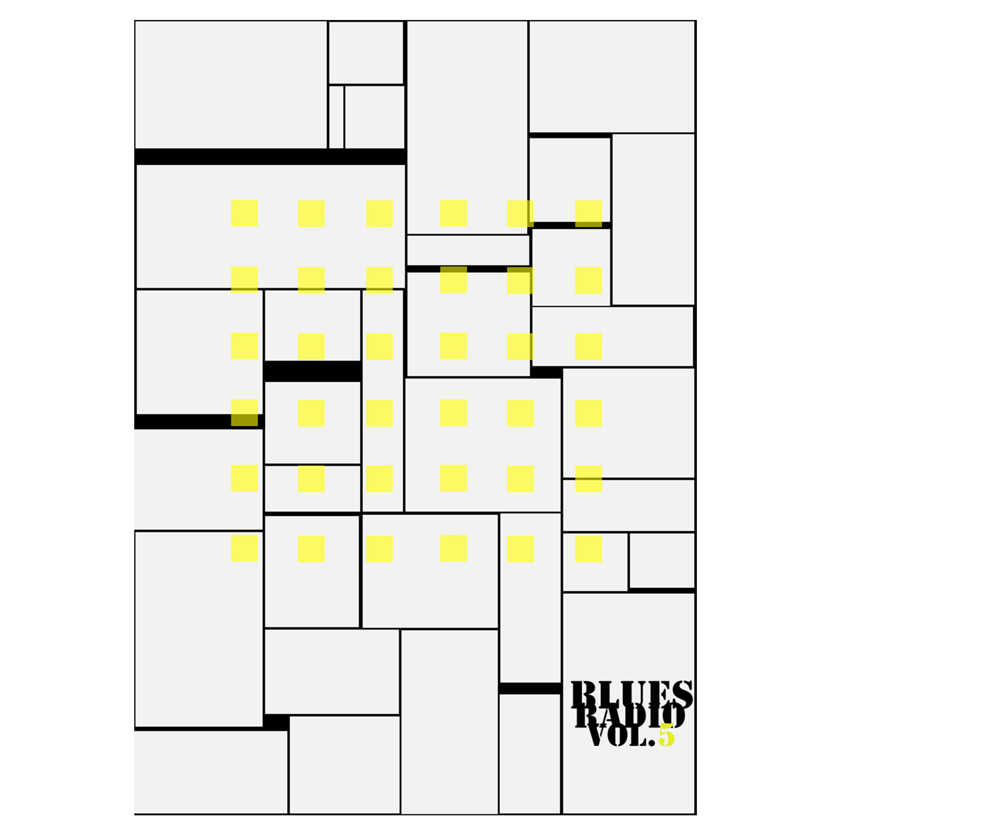
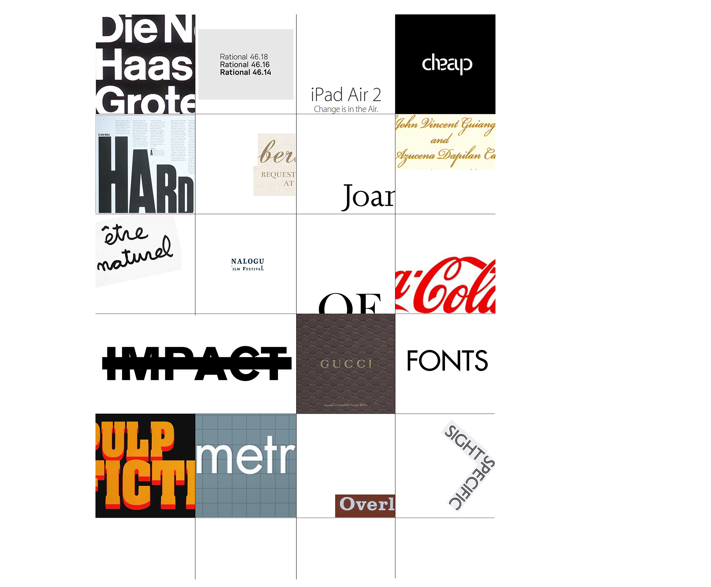

Advertisement for Recruitment of West Lake Ambassadors / Chinese Version / A1 / China / 2015

Advertisement for Recruitment of West Lake Ambassadors / Chinese Version / A1 / China / 2015

Black / Bilingual Version / A1 / Hong Kong / 2014
Typographic Seduce / English Version / A3 Square / Hong Kong / 2014
Flutter / Chinese Version / A3 / Hong Kong / 2014
Advertisement for Recruitment of Heritage Preserver / Chinese Version / A1 / China / 2014

Blues Radio vol.1 / English Version / A3 / Hong Kong / 2013
Blues Radio vol.2 / English Version / A3 / Hong Kong / 2013
Blues Radio vol.3 / English Version / A3 / Hong Kong / 2013
Blues Radio vol.4 / English Version / A3 / Hong Kong / 2014
Blues Radio vol.5 / English Version / A3 / Hong Kong / 2014
Bazaar / English Version / A3 / Hong Kong / 2014
